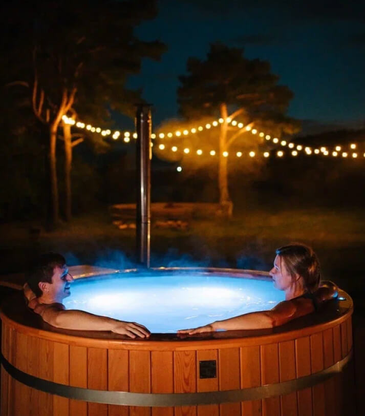

Для дома и семьи
Отличный способ провести вечер с родными: спокойно пообщаться, снять напряжение и почувствовать, что вы по-настоящему отдохнули.
Тёплая уличная купель с подогревом расслабляет с первых минут, подсветка добавляет уюта, а гейзер превращает отдых в настоящее СПА под открытым небом.
После остаётся главное — радость и приятные воспоминания.